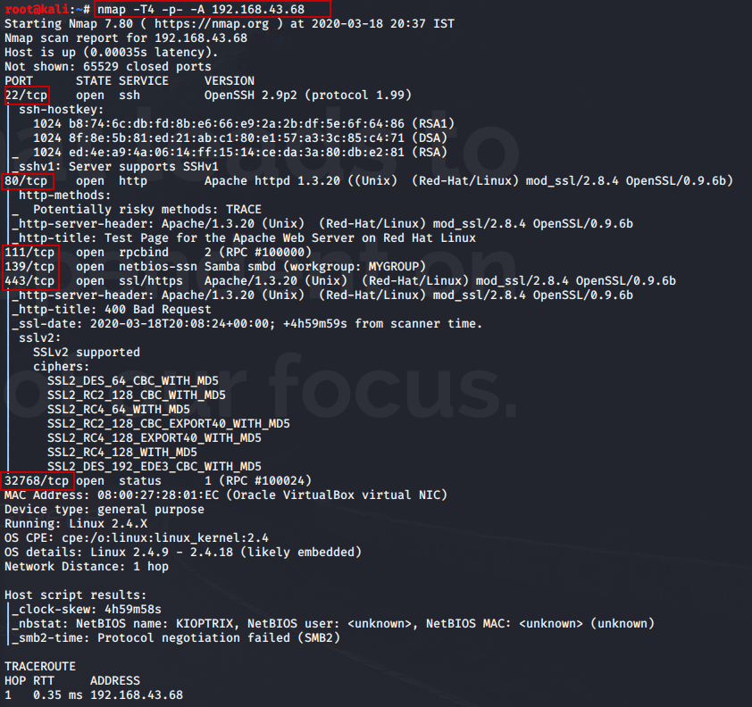

Its a network mapper tool to do different types of scans on a network
Various types of scans
1) Stealth Scan (-sS)- What it does is (SYN SYN-ACK) and for the last ACK( our kali says just kidding reset the connection) i.e. RST instead of ACK
So we have the IP of machine lets do a Nmap

-T4 : is speed T5>T4>T3>T2>T1 in terms of speed
-p- : is to scan all ports even beyon 1000
-A : To give all info like OS, fingerprint, etc
Here we have many open ports lets start from the one which hosts a website